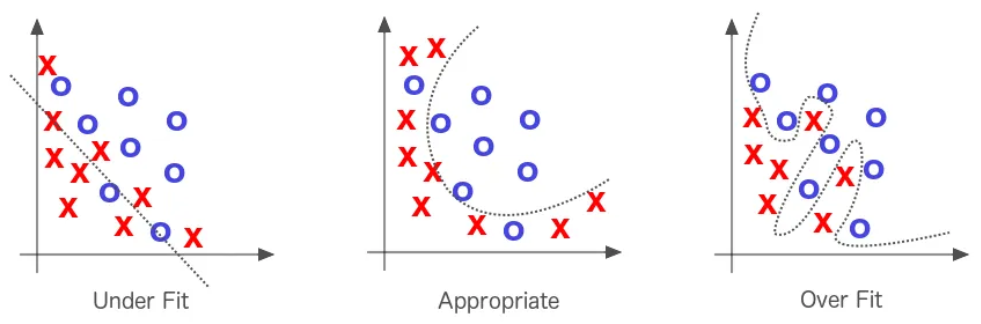
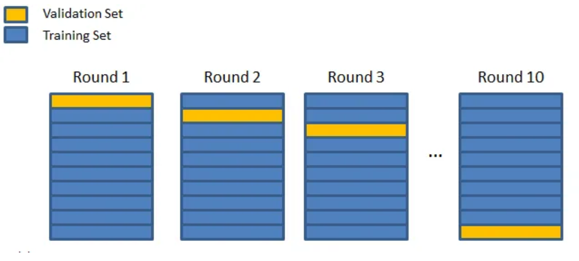

Introducción a la validación cruzada#
La validación cruzada (cross-validation) es una técnica que permite evaluar con precisión un modelo de deep learning utilizando todo el conjunto de datos disponible para el entrenamiento. Este contenido está basado en el artículo, del cual también se extrajeron las imágenes utilizadas.
Problemas de los modelos de deep learning#
Como se mencionó anteriormente, uno de los principales problemas de los modelos de deep learning es el sobreajuste (overfitting). Para profundizar en este tema, consulta el módulo adicional sobre regularización. No basta con que un modelo tenga un buen rendimiento en los datos de entrenamiento; lo esencial es que también funcione bien con los datos de prueba.

La validación cruzada es una técnica que facilita la detección del overfitting y permite ajustar con mayor precisión los hiperparámetros para mitigar este problema.
¿Cómo funciona la validación cruzada?#
La técnica de validación cruzada se divide en 3 etapas:
Se particiona el conjunto de datos en un número determinado de subconjuntos.
Se reserva uno de los subconjuntos y se entrena el modelo con los datos restantes.
Finalmente, se evalúa el modelo utilizando el subconjunto que se apartó inicialmente.
Este proceso se repite hasta que todos los subconjuntos hayan sido evaluados. Por ejemplo, si el conjunto de datos se divide en 10 subconjuntos, el modelo se entrenará 10 veces. Al finalizar todos los entrenamientos, se calcula el rendimiento promedio del modelo en las diferentes iteraciones para obtener una evaluación general.

Existen tres variantes principales de validación cruzada, todas ellas similares entre sí:
k-fold cross validation (validación cruzada k-pliegues).
stratified k-fold cross validation (validación cruzada k-pliegues estratificada).
leave one out cross validation (LOOCV, validación cruzada dejando uno fuera).
Validación cruzada k-pliegues (k-fold)#
La validación cruzada k-pliegues es la versión más clásica. En este método, el conjunto de datos se divide en \(k\) subconjuntos. Se entrenan \(k\) modelos, cada vez utilizando un subconjunto diferente para validación, y se promedia el rendimiento para evaluar el modelo de manera general.

¿Cómo elegir el parámetro \(k\)? En general, se selecciona un valor de \(k\) tal que los subconjuntos sean lo suficientemente grandes para representar estadísticamente el conjunto de datos original. La elección de \(k\) también depende del tiempo y los recursos disponibles, ya que un valor mayor implica un mayor número de entrenamientos.
Un valor comúnmente utilizado es \(k=10\).
Validación cruzada k-pliegues estratificada#
Este método es casi idéntico a la validación cruzada k-pliegues tradicional, pero con una restricción adicional: cada subconjunto debe mantener la misma distribución de clases que el conjunto de datos original. Esto garantiza que la evaluación del modelo sea equitativa en términos de rendimiento para cada clase.

Validación cruzada dejando uno fuera (leave-one-out, LOOCV)#
Esta técnica es muy similar a la validación cruzada k-pliegues, pero con un valor de \(k\) igual al tamaño del conjunto de datos (\(k = n\)). En cada iteración, el modelo se entrena con todos los datos excepto uno, lo que implica entrenar el modelo \(n\) veces. Aunque este enfoque puede ser costoso en tiempo y recursos, su ventaja es que el modelo se entrena con casi la totalidad de los datos disponibles.
En la práctica, este método no se utiliza con frecuencia, excepto en casos de ajuste fino (finetuning) con conjuntos de datos pequeños, donde resulta especialmente útil.
Ventajas e importancia de la validación cruzada#
La validación cruzada ofrece múltiples ventajas:
Detección más sencilla del overfitting: Permite identificar este problema y ajustar los hiperparámetros de manera adecuada.
Evaluación más confiable en contextos científicos: Al utilizar esta técnica, se reduce el sesgo que podría introducirse al dividir aleatoriamente los datos de entrenamiento y validación, lo que garantiza resultados más robustos.
Si dispones de los recursos necesarios (tiempo y capacidad de cómputo), se recomienda utilizar la validación cruzada de manera sistemática para evaluar tus modelos.